탈모 고민
탈모약만 먹으면 될까요?
- 샴푸 바꿔도 그대로예요
- 영양제도 먹어 봤어요
- 약만 먹어도 괜찮을까?
조은의원은내게 맞는지 먼저 살펴봅니다.
조은의원 대표원장 주영주
원장인 저도
탈모인이었습니다
같은 고민을 했던 사람으로서,
제 사진부터 보여 드립니다.
정면
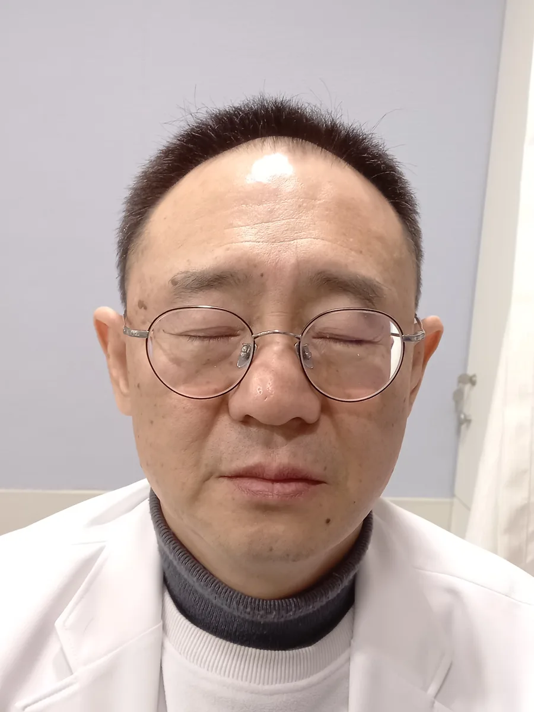
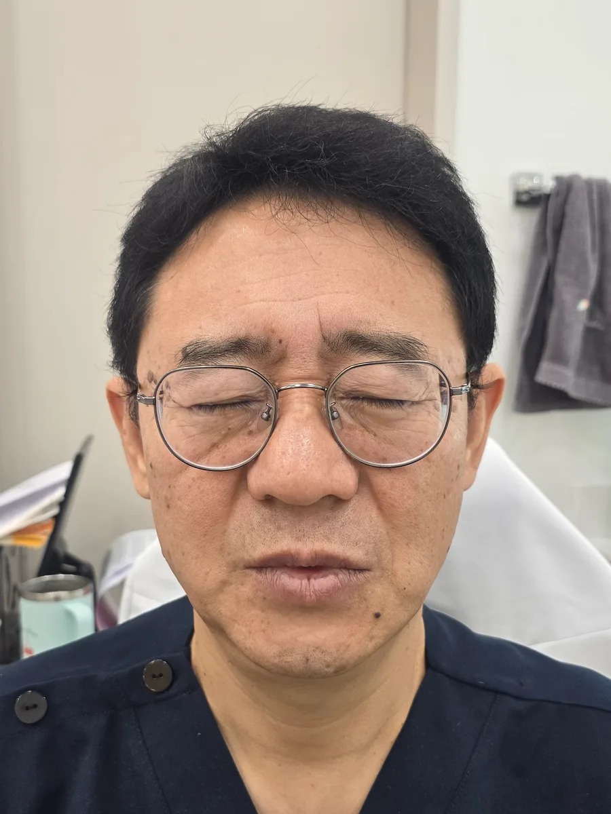
BEFORE 2024.01 AFTER 2026.10정수리
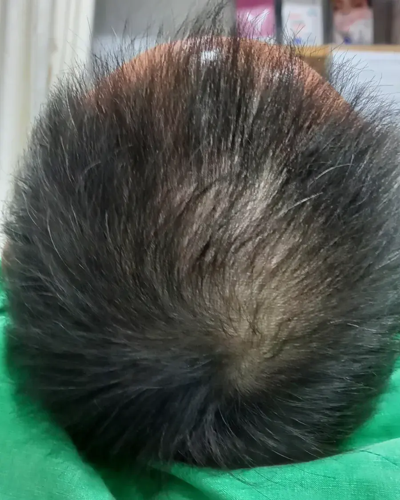
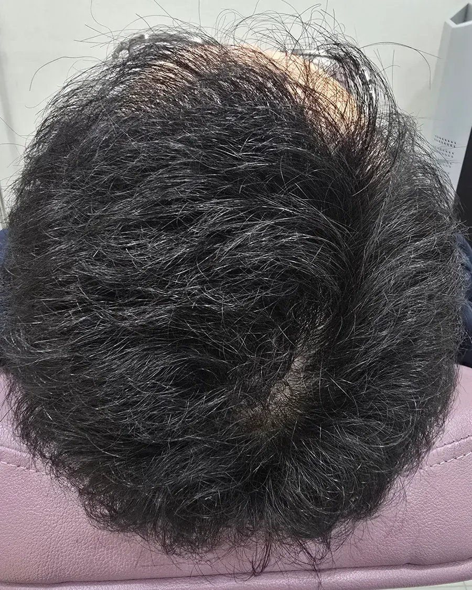
BEFORE 2023.11 AFTER 2026.10“제가 직접 겪었고,
지금 이렇게 관리하고 있습니다.”
※ 원장 본인의 사례이며, 결과는 개인에 따라 다를 수 있습니다. 시술 후 붓기·통증 등의 부작용이 생길 수 있습니다. 전후 사진은 촬영 환경(조명·머리 길이·각도)이 다르며 자르기 외 보정은 하지 않았습니다.
저도 여러분과
같은 길을 걸었습니다
- 1가족력부모님도
탈모 - 220대 후반M자
시작 - 330~40대정수리까지
진행 - 4처방약꾸준히,
그래도 아쉬움 - 시술수년 고민
끝에 시작
약만으로 아쉬웠던 그 마음,
저도 겪어서 압니다.
머리카락이 빠지는 게 아니라
모낭이 작아지는 겁니다
남성형 탈모는 호르몬과 유전이 함께 작용해
아주 천천히 진행됩니다.
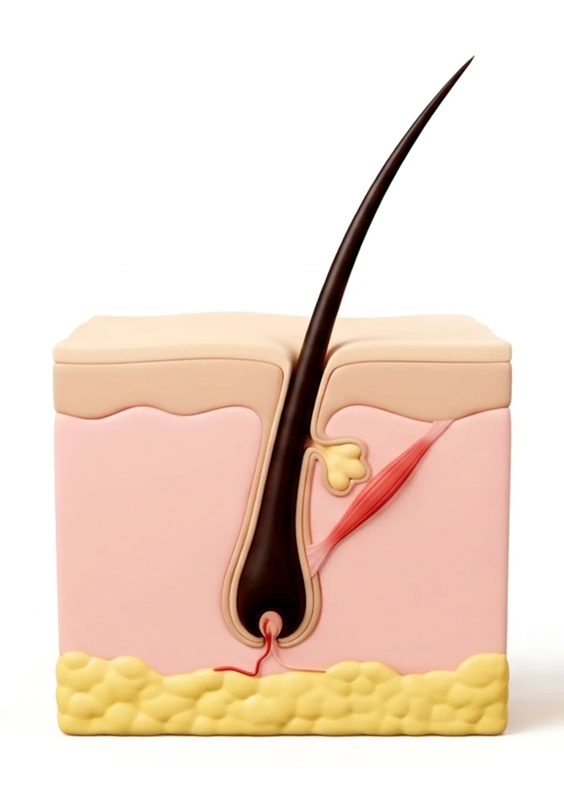
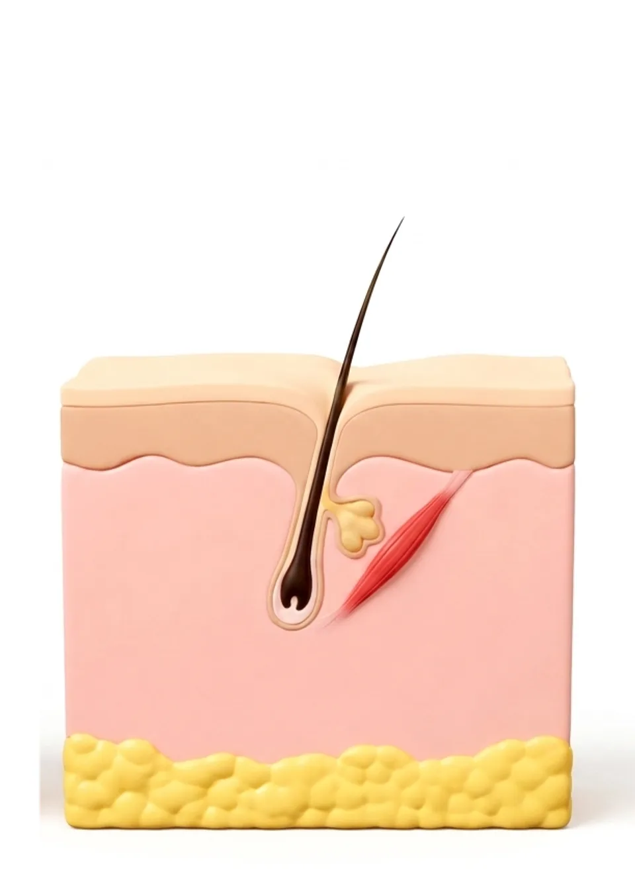
-
01
호르몬이 바뀝니다
남성호르몬이 두피의 효소를 만나
더 강한 DHT로 바뀝니다. -
02
자라는 기간이 짧아집니다
DHT가 모낭 뿌리에 작용하면
머리카락의 성장기가 짧아집니다. -
03
모낭이 작아집니다
빠지고 다시 날 때마다
가늘고 짧은 머리카락이 자랍니다.
왜 정수리·앞머리부터일까요?
앞머리·정수리 모낭은
이 호르몬에 더 민감한 경우가 많습니다.
그래서 뒷머리는 그대로인데
정수리부터 비어 보이기 쉽습니다.
혹시 이런 고민도
하고 계신가요?
- 몇 달째 약을 먹는데 그대로인 것 같아요
- 부작용 이야기를 듣고 약이 망설여져요
- 약을 끊으면 다시 빠질까 걱정돼요
- 정수리·이마가 신경 쓰여 모자를 자주 써요
- 언제 병원에 가야 할지 모르겠어요
하나라도 해당된다면,
지금 내 두피 상태부터 확인해 보세요.
탈모는 어느 날
갑자기 생기지 않습니다
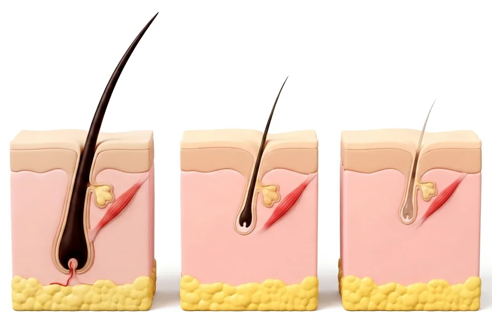
- 굵은 모발건강한 모낭
- 가늘어진 모발모낭이 작아지는 중
- 솜털처럼거의 자라지 않음
머리카락이 가늘어지는 동안은
모낭이 아직 남아 있는 시기입니다.
그래서 탈모는
미리 준비해야 합니다.
같은 탈모라도
치료 방향은 다릅니다
그래서 조은의원은
먼저 듣고, 직접 보고, 함께 정합니다.
- 먼저 듣습니다: 가족력과 시작 시기, 해 온 관리를 여쭙니다.
- 직접 봅니다: 두피 확대경으로 굵기와 밀도를 봅니다.
- 함께 정합니다: 지금 단계에 맞는 치료 방향을 설명드립니다.
- 세심하게 시술합니다: 두피 상태를 보며 장비 시술을 진행합니다. (AI 영상)
- 꾸준히 관리합니다: 정한 방향에 맞춰 두피 레이저 관리를 진행합니다.
“제가 겪어 봤기에,
한 분 한 분
직접 살펴봅니다.”
처음 오셔도
낯설지 않도록
-
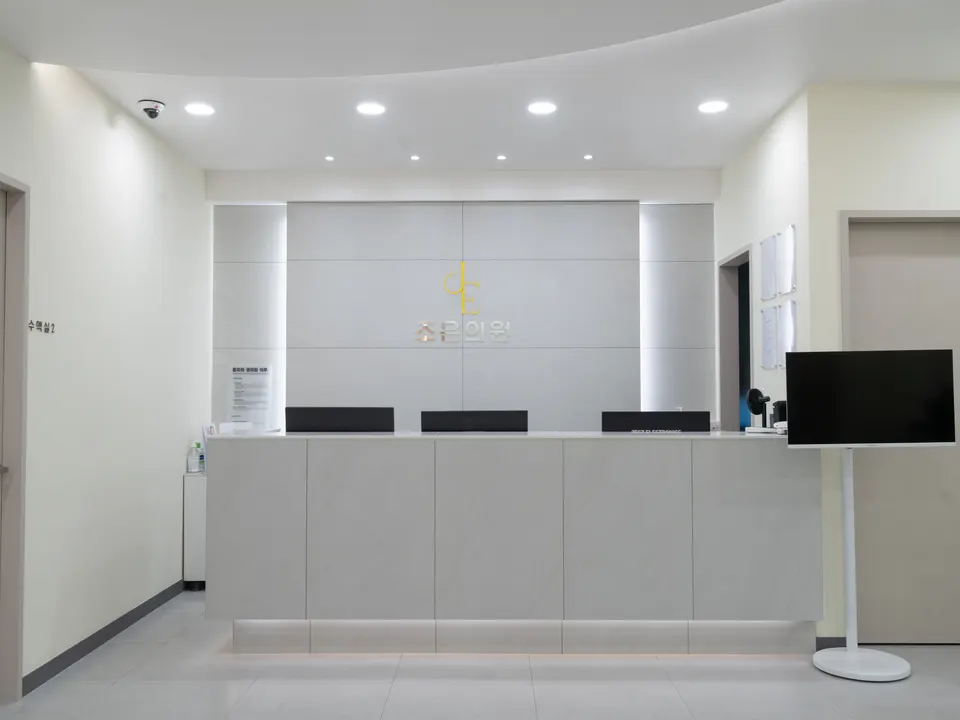
접수·안내오시면 먼저
접수와 안내를 도와드립니다. -
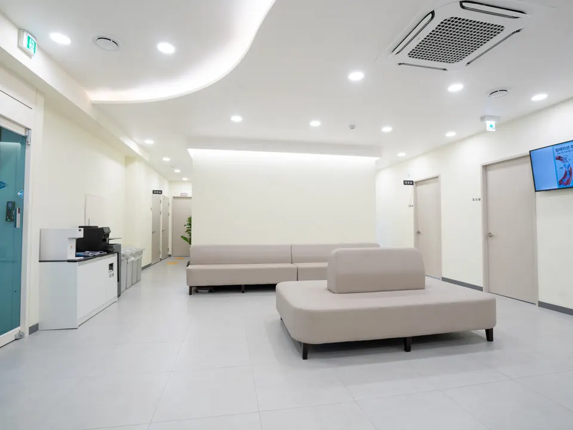
대기 공간넓고 밝은 대기실에서
편하게 기다리세요. -
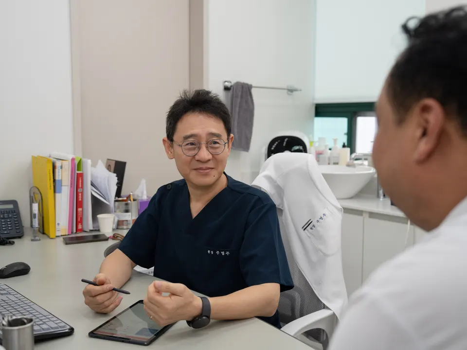
진료실대표원장이 직접
이야기를 듣고 상담합니다. -
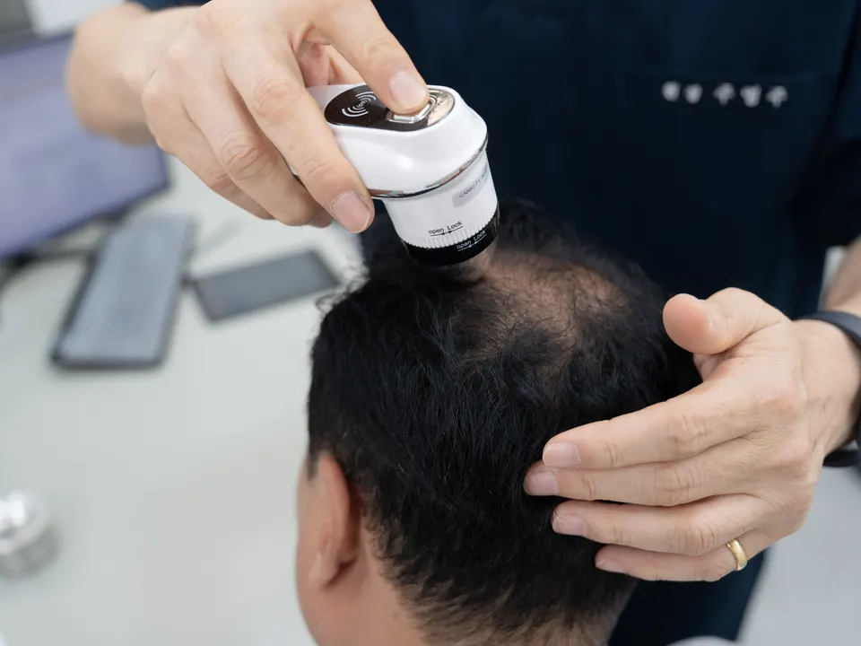
두피 검사확대경으로
두피와 모발 상태를 봅니다. -
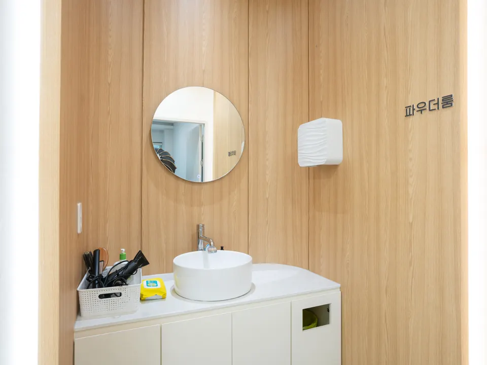
파우더룸시술 전에
세안하고 편하게 준비하세요. -
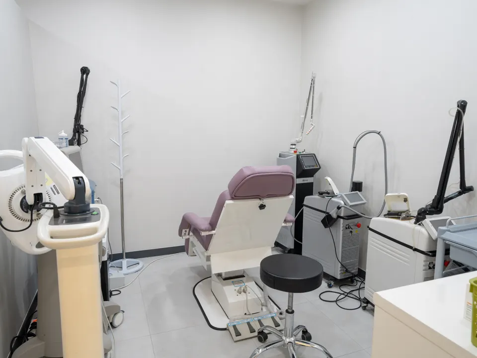
레이저실정한 방향에 맞춰
레이저 관리를 진행합니다. -
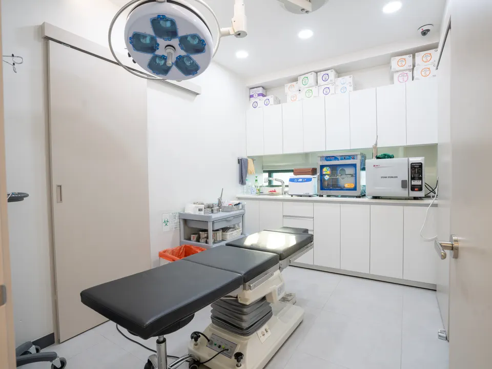
시술실깨끗하게 관리된 공간에서
시술을 진행합니다.
궁금한 것,
원장이 직접 답합니다
탈모를 직접 겪은 원장이
자주 묻는 질문에 답했습니다.
질문을 누르면 바로 볼 수 있어요
머리카락이 가늘어지는 지금은
모낭이 아직
남아 있는 시기입니다
탈모는 미리 준비할수록
선택할 수 있는 방법이 많습니다.
그 준비, 조은의원이 함께하겠습니다.